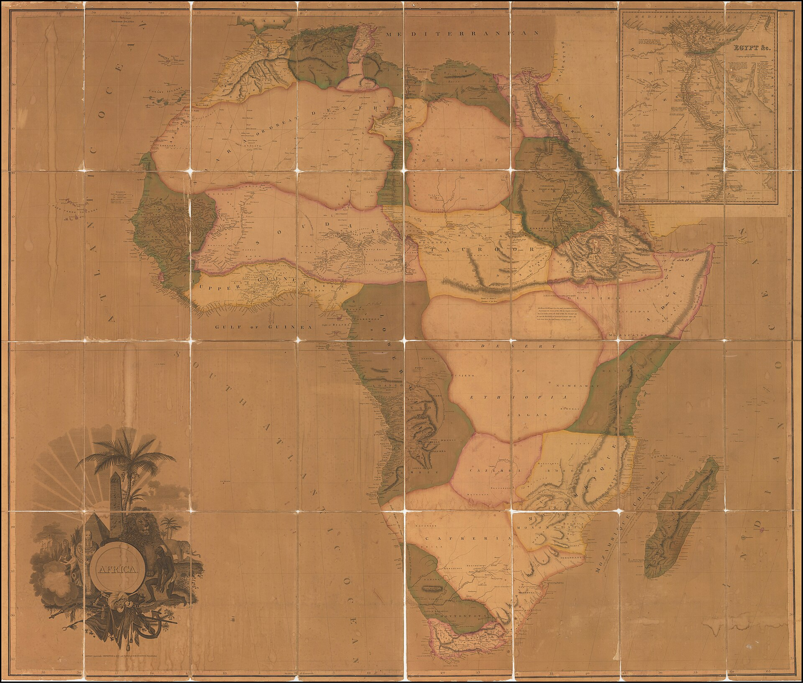

← 目次“I don’t want to bother you much with what happened to me personally,” he began, showing in this remark the weakness of many tellers of tales who seem so often unaware of what their audience would like best to hear; “yet to understand the effect of it on me you ought to know how I got out there, what I saw, how I went up that river to the place where I first met the poor chap. It was the farthest point of navigation and the culminating point of my experience. It seemed somehow to throw a kind of light on everything about me—and into my thoughts. It was sombre enough, too—and pitiful—not extraordinary in any way—not very clear either. No, not very clear. And yet it seemed to throw a kind of light.
It seemed somehow to throw a kind of light on everything about me—and into my thoughts. It was sombre enough, too—and pitiful—not extraordinary in any way—not very clear either. No, not very clear. And yet it seemed to throw a kind of light.
James Valentine（写真）, Fleet Street, London, 1890年ごろ／Public domain／Commons
“I had then, as you remember, just returned to London after a lot of Indian Ocean, Pacific, China Seas—a regular dose of the East—six years or so, and I was loafing about, hindering you fellows in your work and invading your homes, just as though I had got a heavenly mission to civilize you. It was very fine for a time, but after a bit I did get tired of resting. Then I began to look for a ship—I should think the hardest work on earth. But the ships wouldn’t even look at me. And I got tired of that game, too.
“Now when I was a little chap I had a passion for maps. I would look for hours at South America, or Africa, or Australia, and lose myself in all the glories of exploration. At that time there were many blank spaces on the earth, and when I saw one that looked particularly inviting on a map (but they all look that) I would put my finger on it and say, ‘When I grow up I will go there.’ The North Pole was one of these places, I remember. Well, I haven’t been there yet, and shall not try now. The glamour’s off. Other places were scattered about the hemispheres. I have been in some of them, and... well, we won’t talk about that. But there was one yet—the biggest, the most blank, so to speak—that I had a hankering after.
At that time there were many blank spaces on the earth, and when I saw one that looked particularly inviting on a map (but they all look that) I would put my finger on it and say, ‘When I grow up I will go there.’
“True, by this time it was not a blank space any more. It had got filled since my boyhood with rivers and lakes and names. It had ceased to be a blank space of delightful mystery—a white patch for a boy to dream gloriously over. It had become a place of darkness. But there was in it one river especially, a mighty big river, that you could see on the map, resembling an immense snake uncoiled, with its head in the sea, its body at rest curving afar over a vast country, and its tail lost in the depths of the land. And as I looked at the map of it in a shop-window, it fascinated me as a snake would a bird—a silly little bird. Then I remembered there was a big concern, a Company for trade on that river. Dash it all! I thought to myself, they can’t trade without using some kind of craft on that lot of fresh water—steamboats! Why shouldn’t I try to get charge of one? I went on along Fleet Street, but could not shake off the idea. The snake had charmed me.
H. M. Stanley の原図（Petermanns Mitteilungen）, Flussgebiet des Congo, 1877／Public domain／Commons
“I am sorry to own I began to worry them. This was already a fresh departure for me. I was not used to get things that way, you know. I always went my own road and on my own legs where I had a mind to go. I wouldn’t have believed it of myself; but, then—you see—I felt somehow I must get there by hook or by crook. So I worried them. The men said ‘My dear fellow,’ and did nothing. Then—would you believe it?—I tried the women. I, Charlie Marlow, set the women to work—to get a job. Heavens! Well, you see, the notion drove me. I had an aunt, a dear enthusiastic soul. She wrote: ‘It will be delightful. I am ready to do anything, anything for you. It is a glorious idea. I know the wife of a very high personage in the Administration, and also a man who has lots of influence with,’ etc. She was determined to make no end of fuss to get me appointed skipper of a river steamboat, if such was my fancy.
“I got my appointment—of course; and I got it very quick. It appears the Company had received news that one of their captains had been killed in a scuffle with the natives. This was my chance, and it made me the more anxious to go. It was only months and months afterwards, when I made the attempt to recover what was left of the body, that I heard the original quarrel arose from a misunderstanding about some hens. Yes, two black hens. Fresleven—that was the fellow’s name, a Dane—thought himself wronged somehow in the bargain, so he went ashore and started to hammer the chief of the village with a stick. Oh, it didn’t surprise me in the least to hear this, and at the same time to be told that Fresleven was the gentlest, quietest creature that ever walked on two legs. No doubt he was; but he had been a couple of years already out there engaged in the noble cause, you know, and he probably felt the need at last of asserting his self-respect in some way. Therefore he whacked the old nigger mercilessly, while a big crowd of his people watched him, thunderstruck, till some man—I was told the chief’s son—in desperation at hearing the old chap yell, made a tentative jab with a spear at the white man—and of course it went quite easy between the shoulder-blades. Then the whole population cleared into the forest, expecting all kinds of calamities to happen, while, on the other hand, the steamer Fresleven commanded left also in a bad panic, in charge of the engineer, I believe. Afterwards nobody seemed to trouble much about Fresleven’s remains, till I got out and stepped into his shoes. I couldn’t let it rest, though; but when an opportunity offered at last to meet my predecessor, the grass growing through his ribs was tall enough to hide his bones.
The grass growing through his ribs was tall enough to hide his bones.
They were all there. The supernatural being had not been touched after he fell. And the village was deserted, the huts gaped black, rotting, all askew within the fallen enclosures. A calamity had come to it, sure enough. The people had vanished. Mad terror had scattered them, men, women, and children, through the bush, and they had never returned. What became of the hens I don’t know either. I should think the cause of progress got them, anyhow. However, through this glorious affair I got my appointment, before I had fairly begun to hope for it.